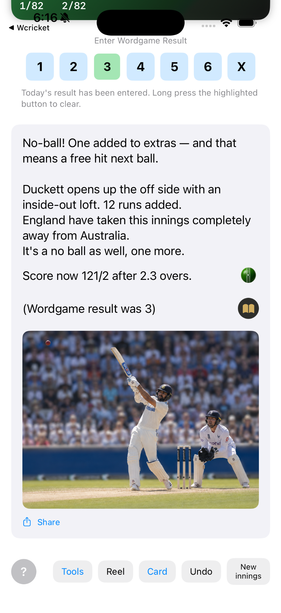

The idea in one move
Your word result becomes the next passage of your innings
Finish your daily word challenge and enter how many attempts it took. Wcricket uses that result, together with cricket rules, decisions and chance, to create what happens next on the field.
Your result3 attempts
Wcricketcricket event
Your inningsscore + story move on
Illustrative flow: the word result is an input to Wcricket, not a fixed one-to-one conversion into a particular cricket outcome.